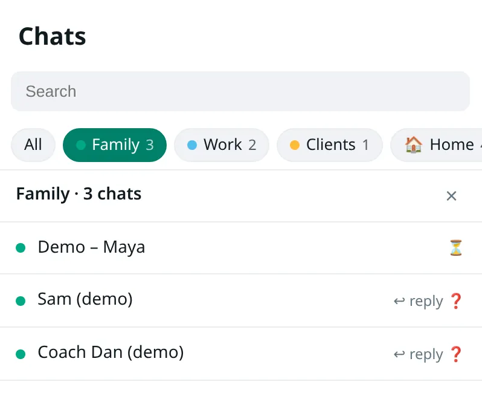

Como organizar as conversas do WhatsApp Web em pastas
Quem atende cliente pelo WhatsApp Web passa o dia olhando uma coluna só: o cliente que pediu orçamento, o grupo da escola, o fornecedor, o condomínio, a família. No computador, dá para separar isso de duas formas. A primeira já vem no WhatsApp: as listas. A segunda é o WA Folders, uma extensão do Chrome feita por nós, que coloca abas de pastas acima da lista de conversas.
Este guia mostra as duas e quando cada uma resolve.
Opção 1: as listas do próprio WhatsApp
O WhatsApp lançou as listas personalizadas em 31 de outubro de 2024. Elas funcionam como filtros. Você cria uma lista como Trabalho ou Família, coloca conversas individuais e grupos nela, e a lista aparece na barra de filtros no topo da aba Conversas, junto com os filtros padrão, como Não lidas e Grupos.
No celular, o caminho descrito pelo WhatsApp é este:
- Na aba Conversas, toque no + da barra de filtros.
- Dê um nome à lista e adicione pelo menos uma conversa ou grupo. Sem nenhuma conversa, a lista não é criada.
- Para incluir outra conversa depois, toque e segure a conversa e escolha adicionar à lista.
No WhatsApp Web, as listas ficam na mesma barra de filtros acima das conversas, mas a liberação no computador foi gradual. Se o + não aparece para você, veja a Central de Ajuda do WhatsApp, que explica onde as listas aparecem em cada aparelho.
As listas não pedem instalação e são do próprio WhatsApp. Se você só quer filtrar a coluna por assunto, comece por elas. O que uma lista não faz é guardar uma nota sobre a conversa, lembrar você de cobrar uma resposta ou exportar a conversa.
Opção 2: pastas do WA Folders no Chrome
Três avisos antes. O WA Folders funciona só no WhatsApp Web (web.whatsapp.com), no Chrome do computador. As pastas ficam no seu navegador e não aparecem no celular. E a extensão não tem vínculo com o WhatsApp nem com a Meta.
Crie a primeira pasta
- Instale o WA Folders pela Chrome Web Store. A interface aparece em português quando o Chrome está em português.
- Abra o web.whatsapp.com e espere as conversas carregarem. O painel do WA Folders aparece na área da conversa, sem cobrir a lista de conversas.
- No cartão Primeiros passos, escreva um nome na caixa Nome da pasta e aperte Adicionar. Ou toque em Família, Trabalho ou Clientes: cada botão cria a pasta com um toque.
- Abra uma conversa e aperte Adicionar conversa na pasta certa. Uma conversa pode ficar em mais de uma pasta.
Use as abas
As pastas viram abas acima da lista de conversas do WhatsApp. Clique numa aba e a lista mostra só as conversas daquela pasta, com marcadores de não lidas, de quem espera sua resposta, de perguntas e de lembretes vencidos. Clique numa conversa e ela abre. Clique em Todas para voltar à lista normal.

Para quem vende pelo WhatsApp, uma divisão possível é Clientes, Orçamentos, Fornecedores e Família, com uma pasta para escola e condomínio. Comece com poucas pastas e crie outra quando uma ficar cheia demais.
Coloque conversas nas pastas automaticamente
Em Configurações, na seção Regras de arquivamento automático, uma regra leva conversas para uma pasta. Ela pode usar:
- O nome da conversa contém (por exemplo, "Cliente")
- O nome da conversa começa com
- O número de telefone começa com (por exemplo, +55 11 para os números com DDD 11, da Grande São Paulo)
- Todo grupo
A regra coloca a conversa na pasta quando o WA Folders a vê na lista ou quando você a abre. "Arquivar" aqui quer dizer colocar na pasta; a conversa não vai para as Arquivadas do WhatsApp. Se você tirar uma conversa da pasta na mão, a regra não a coloca de volta. O plano grátis tem 1 regra.
Ache o que falta organizar
Na seção Visões inteligentes do painel, Sem pasta lista as conversas que você abriu desde a instalação e que ainda não estão em nenhuma pasta. Também dá para usar Sugerir pastas: o WA Folders sugere pastas a partir dos nomes das conversas que estão na tela, e nada entra numa pasta até você clicar em Adicionar estas.
Notas e lembretes em cada conversa
Com uma conversa aberta, a seção Esta conversa tem uma nota privada, como "me deve R$ 40" ou "mandar boleto dia 5". A nota fica salva só neste computador e a outra pessoa nunca vê.
Logo abaixo ficam os lembretes: 1 hora, 3 horas, amanhã às 9:00, segunda às 9:00 ou outra data. Numa conversa individual em que você mandou a última mensagem, também dá para escolher Me lembre se não responderem em 1 ou 3 dias. Se a pessoa responder antes, o lembrete some sozinho. Se não, a conversa aparece em Vencidos. O plano grátis permite 2 lembretes ao mesmo tempo.
Qual das duas usar
Se você quer só filtrar a coluna por assunto, e de preferência também no celular, as listas do WhatsApp bastam. Se você precisa de nota em cada conversa, lembrete para cobrar resposta, regra por DDD ou exportar uma conversa para CSV, HTML, Markdown ou JSON, o WA Folders cobre isso no computador. Dá para usar as duas: o WA Folders não lê nem muda suas listas do WhatsApp.
O plano grátis do WA Folders não tem prazo e inclui 5 pastas, 1 regra, 2 lembretes ao mesmo tempo, 5 resultados por busca e 3 exportações por dia. O Pro custa US$ 4,99 uma vez só, sem assinatura, e tira esses limites.
Se algum passo deste guia não bater com o que aparece na sua tela, escreva para toolshed+wafolders@mail.grokbot.com.